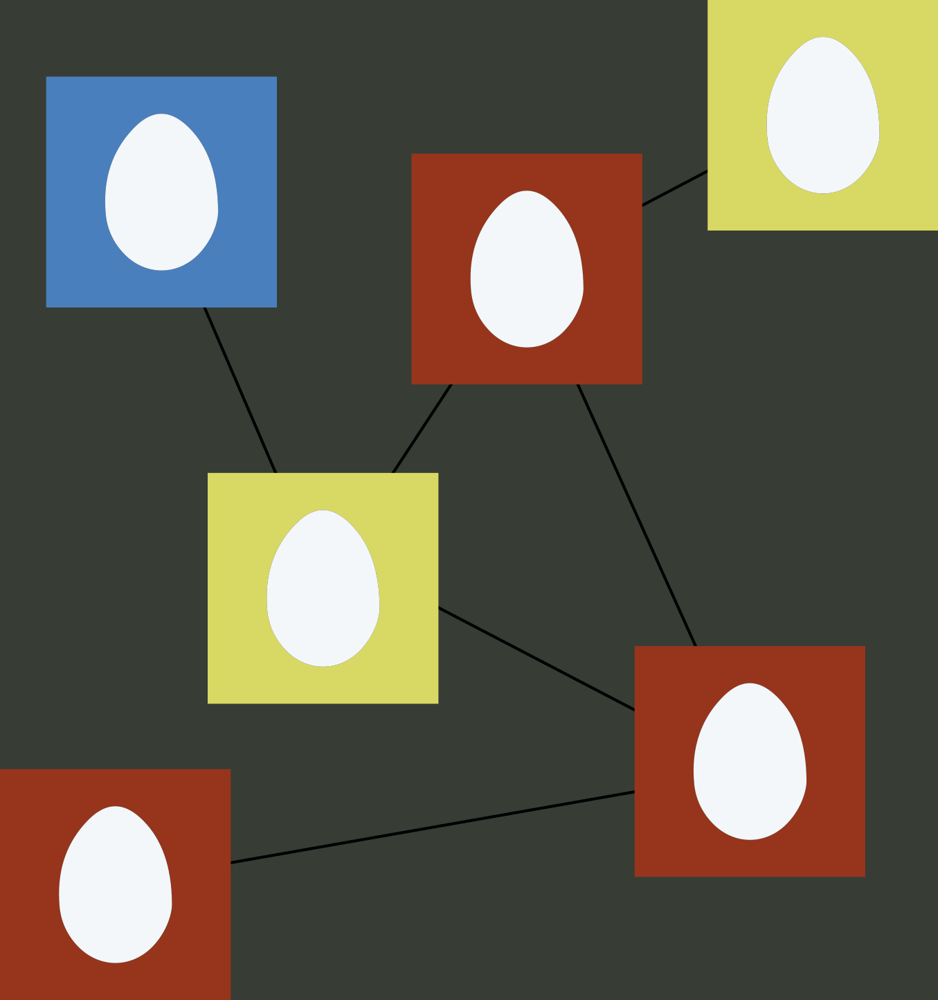

Welcome!
The Contagion on Networks symposium is a satellite of the International School and Conference on Network Science in Indianapolis, Indiana on June XX, 2017.
The Contagion on Networks symposium is a satellite of the International School and Conference on Network Science in Indianapolis, Indiana on June XX, 2017.